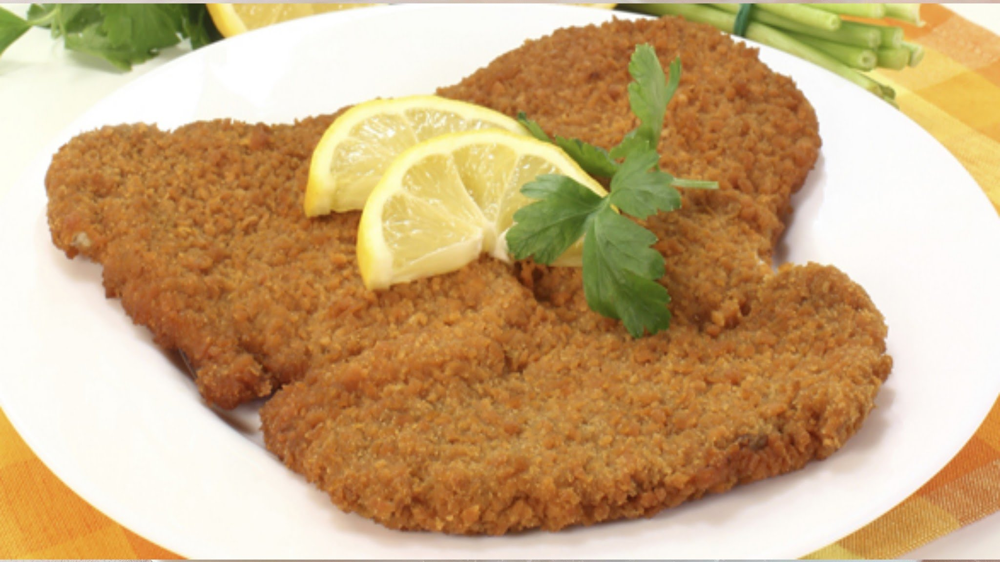

Home
Milanesas

Description
Milanesas are a common argentinian food, which consists of breaded beef that can be fried or baked.
Ingredients
- 1kg of beef thin cut
- 200g of panko
- 1 egg
- 1 spoonful of milk
- Salt, Oregano and other spices to your liking
Steps
- Mix the egg, milk and condiments until it is well integrated.
- Pass each slice of beef through the panko, the mix and the panko again.
- Repeat with every slice of beef.
- Fry until golden them or bake them in the oven at 220ºC for 25 minutes.